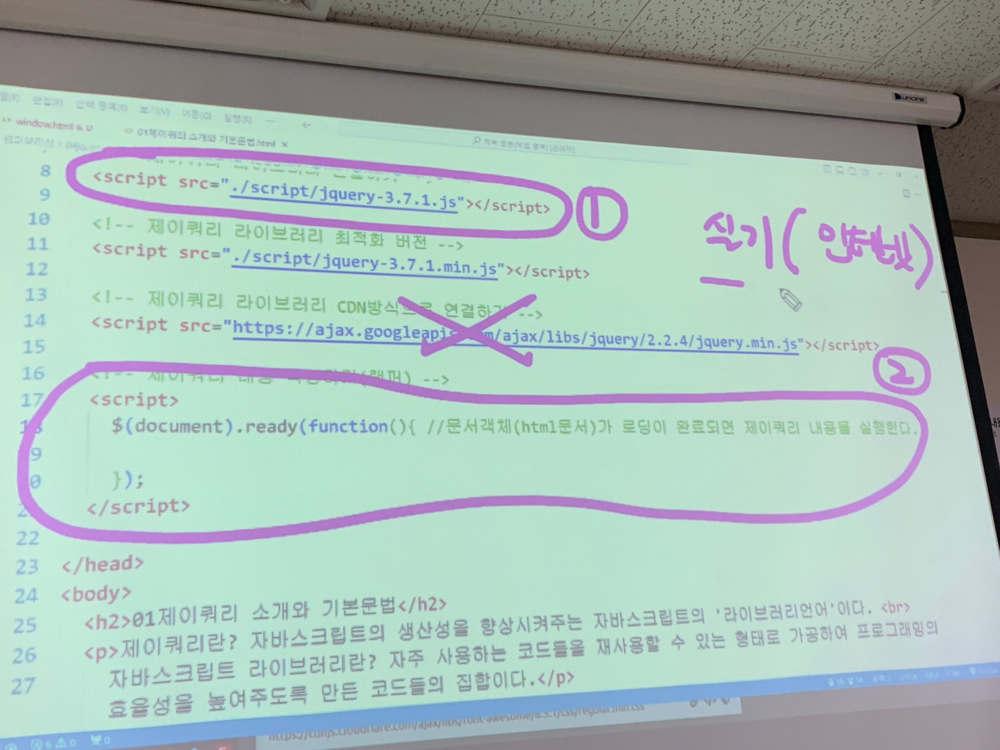

01. 제이쿼리 소개와 기본문법
제이쿼리란? 자바스크립트의 생산성을 향상시켜주는 자바스크립트의 '라이브러리 언어'이다.
자바스크립트 라이브러리란? 자주 사용하는 코드들을 재사용할 수 있는 형태로 가공하여 프로그래밍의 효율성을 높여주도록 만든 코드들의 집합이다.
1) 제이쿼리의 특징
- 앨리먼트(html의 태그요소)를 선택하는 강력한 기능을 제공한다. (css선택자 보다 많음)
- 선택된 앨리먼트를 제어할 수 있는 다양한 함수를 제공한다.
- 자바스크립트의 자주 사용하는 기능을 라이브러리화한 언어이다.
2) 제이쿼리 라이브러리 연결방법
- 제이쿼리 라이브러리 파일을 직접 연결하기 - 제이쿼리 공식사이트에서 라이브러리 파일을 다운로드 받아서 html문서의 head요소안에 직접 script작성하여 연결
- 제이쿼리 라이브러리 CDN방식으로 연결하기 - JQUERY.COM페이에서 오른쪽 '다운로드'클릭, 페이지로 이동하고 아래페이지로 내려가면 'GOOGLE CDN'메뉴 클릭하여 나온 페이지에서 1x, 2x, 3x버전 선택하여 복사, html head영역안에 붙여넣기한다.
3) 제이쿼리 문법(작성법)
- 1방법: $('선택대상').메서드();
- 2방법: jquery('선택대상').메서드();
4) 제이쿼리 라이브러리에서 $의 역활
제이쿼리에서는 '$'기호를 맨앞에 넣고 시작을 하는데 이것은 괄호()안에 넣을 대상을 선택하기 위함이다.
ex)
$('h1')
$(window) - 객체라 따음표''안씀
$('#id')
$("input[type='text']").....
5. 제이쿼리에서 '$'기호 안에 들어가는 대상 3가지
- html태그
- css선택자
- 자바스크립트 객체(document, window....)
6) 제이쿼리에서 사용하는 wrapper
- $(document).ready(function(){실행할내용;});
- $(function(){실행할내용;});
가장짧지만 구버전에 적용이안될수도있음
- jQuery(function(){실행할내용;});
옛날방식1
- $(function(){실행할내용;})(jQuery);
옛날방식2
- 웹기능 실기때 사용
